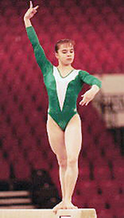

Lilia Podkopayeva (UKR)
1996 Olympic AA Champion
1996 European AA Champion
1995
World AA Champion

Medal Total
- Olympic Games: 2 Gold, 1
Silver
- World Championships: 2
Gold, 3 Silver
- European Championships: 4
Gold, 1 Silver, 3 Bronze
Lilia was born on August 15, 1978, in Donetsk,
Ukraine. She began gymnastics in 1983 and was coached by Galina
Lossinskaya at Dynamo Donetsk throughout her career. On December 25,
2004, she married Timofei Nagorny, a businessman from Donetsk, in a civil
ceremony in that city. Earlier that month, the couple had gotten married
during a trip to Tahiti.
Competition Results
- 1993
- European Cup: 2nd AA, 2nd V, 3rd B
- French International: 3rd V, 3rd FX
- Hungarian International: 1st V, 1st UB, 2nd AA
- International Championships of Romania: 4th AA
- USA-BLR-UKR Tri-Meet: 5th AA
- World Championships: 8th V, 16th AA (prelims)
- 1994
- American Cup: 5th AA
- DTB Cup: 1st V, 2nd FX, 4th B
- European Championships: 1st FX, 2nd B, 3rd Team,
3rd V, 5th AA, 6th UB
- Goodwill Games: 1st V, 3rd FX, 3rd Team, 4th AA
- International Mixed Pairs: 3rd Team
- Soapberry World Challenge: 2nd AA, 2nd V, 2nd B, 2nd UB,
3rd FX
- Swiss Cup: 5th B
- World Championships (Brisbane): 2nd B, 5th
UB, 6th AA, 8th V
- World Championships (Dortmund): 5th Team
- 1995
- Cottbus Grand Prix: 1st V, 1st FX, 7th UB, 7th B
- DTB Cup: 1st B, 3rd V, 5th UB, 6th FX
- European Cup: 1st UB, 1st B, 2nd V, 3rd FX, 4th AA
- French International: 2nd V, 2nd B, 10th AA
- Gymnix International: 1st AA
- Kosice International: 1st AA, 6th V
- Subway World Gymnastics Challenge: 1st AA
- World Championships: 1st AA, 1st V, 2nd UB,
2nd B, 5th Team, 7th FX
- 1996
- European Championships: 1st AA, 1st UB, 1st FX, 3rd
V
- Grand Prix of Rome: 1st AA
- French International: 1st UB, 2nd B, 2nd FX
- Kiev International: 1st Team
- Olympic Games: 1st AA, 1st FX, 2nd B, 5th
UB, 5th Team
-
- 1997
- European Gymnastic Masters: 3rd Team
- This page was last updated on March 19,
2004.
© Gymn Forum